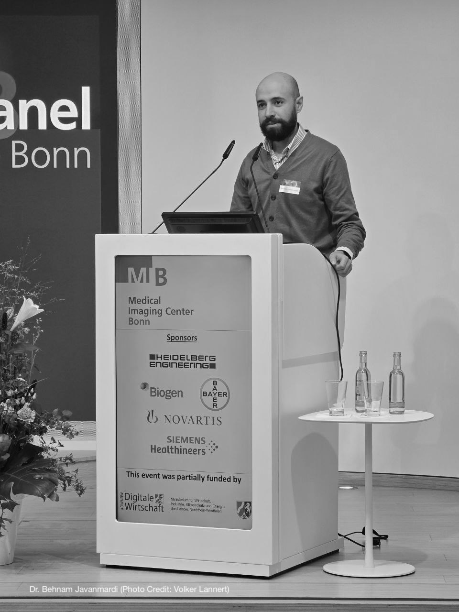
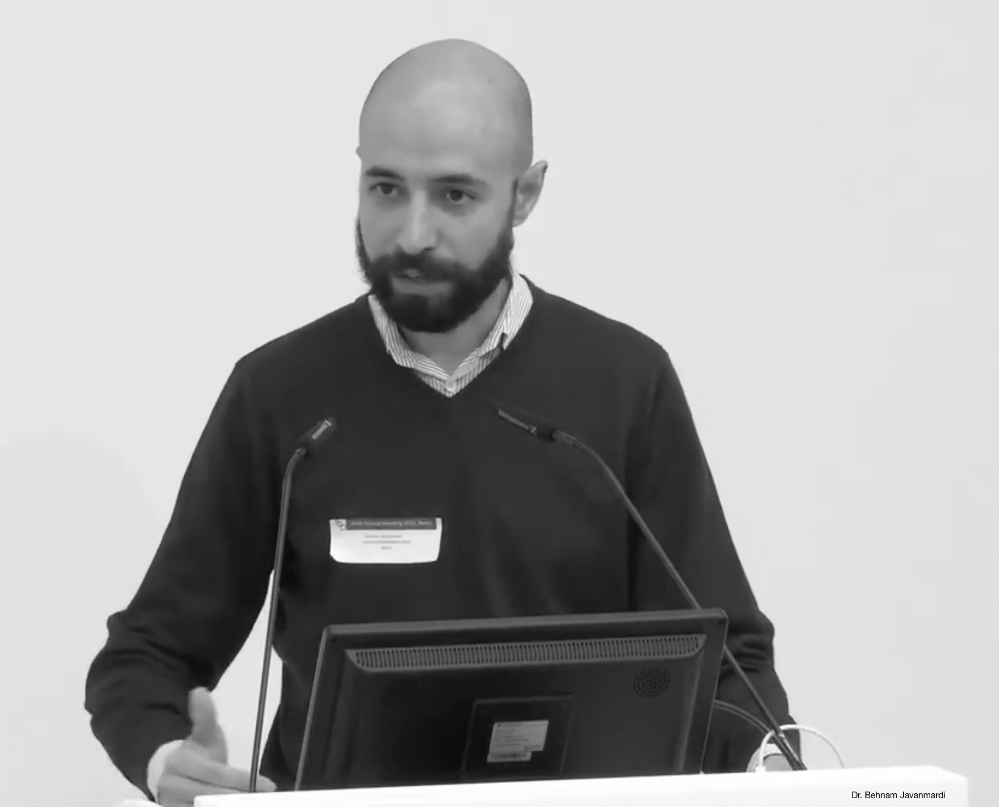

| 2025 | ||
|---|---|---|
| 2025.04.29 | Bone2Gene: Artificial Intelligence for Diagnosing and Monitoring Genetic Bone Diseases | BioVaria, Munich, Germany |
| 2025.04.09 | Bone2Gene: AI for Diagnosing Genetic Bone Diseases | Invited talk at the German Biotech Days, Heidelberg, Germany |
| 2025.01.17 | Artificial Intelligence for Skeletal Dysplasias | Invited talk at the Jahrestagung der Mitteldeutschen Arbeitsgemeinschaft für Pädiatrische Endokrinologie (MAPE 2025), Magdeburg, Germany |


| 2024 | ||
|---|---|---|
| 2024.11.06 | Bone2Gene: artificial intelligence for diagnosing and monitoring genetic bone diseases | Invited talk at Medical Imaging Center Bonn (MIB) Future Panel 2024, Bonn, Germany |
| 2024.09.20 | Artificial Intelligence for Skeletal Dysplasias | 16th International Skeletal Dysplasia Society (ISDS) Meeting, Madrid, Spain |
| 2024.09.05 | Bone2Gene: artificial intelligence for diagnosing and monitoring genetic bone diseases | Invited talk at Pitch4MED: Medicine of Tomorrow, Düsseldorf, Germny |
| 2024.01.19 | Deeplasia: AI for bone age measurement | Invited talk at STARTPLATZ AI Hub, Cologne, Germny |


| 2023 | ||
|---|---|---|
| 2023.09.13 | Deeplasia: Paediatric bone age assessment AI for skeletal dysplasiass | EuroDysmorpho 2023 – 33rd European Meeting on Dysmorphology, Lisbon Medical Academic Center, Portugal |
| 2023.06.15 | Deeplasia: AI for bone age measurement | Invited talk at the AI & Rare Diseases Day, Imagine Institute for Genetic Diseases, Paris, France |
| 2023.03.16 | Deeplasia: Deep learning for pediatric bone age assessment robust to skeletal dysplasias | 34. Jahrestagung der Deutschen Gesellschaft für Humangenetik, Kassel, Germany |

| 2022 | ||
|---|---|---|
| 2022.10.07 | Bone2Gene: Artificial intelligence for the diagnosis of skeletal malformations | Invited talk at the 2022 meeting of the Arbeitsgemeinschaft für Gen-Diagnostik e.V. (AGD), Bonn, Germany |
| 2022.09.17 | Bone2Gene: Artificial intelligence-based recognition and classification of genetic skeletal dysmorphism | EuroDysmorpho 2022 – 32nd European Meeting on Dysmorphology, Barcelona, Spain |
| 2022.09.09 | Bone2Gene: Strengths and challenges of artificial intelligence for the diagnosis of rare skeletal disorders | Invited talk at the Kongress für Kinder- und Jugendmedizin 2022, Düsseldorf, Germny |
| 2022.03.17 | Bone2Gene: Deep learning-based diagnosis of rare genetic skeletal disorders | 33. Jahrestagung der Deutschen Gesellschaft für Humangenetik, Würzburg, Germany |